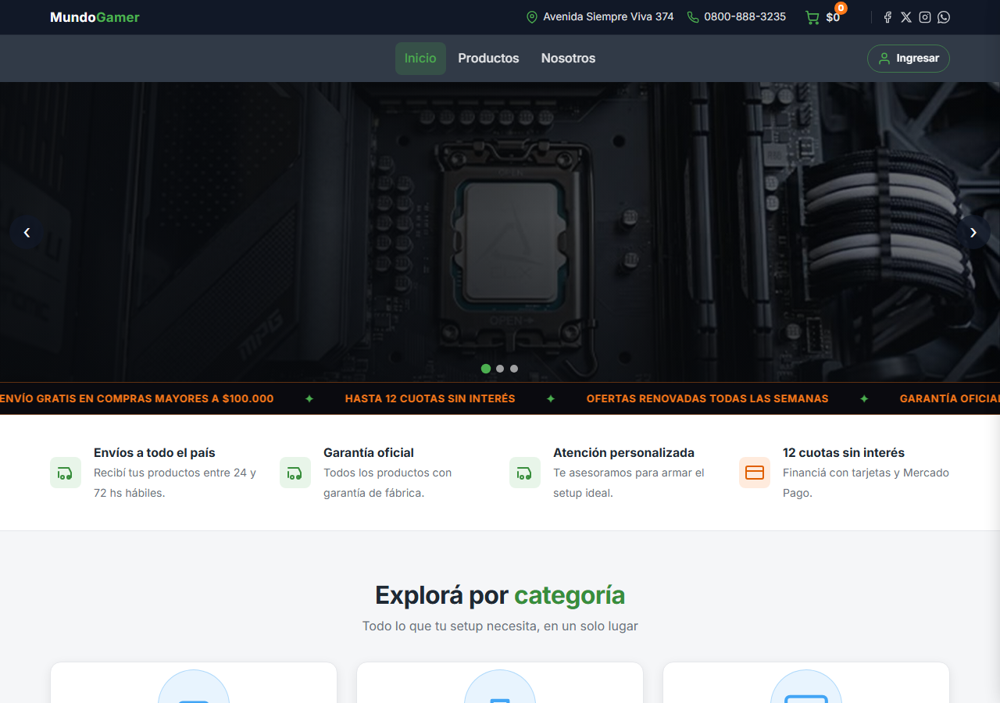

Primer proyecto · 2025
Mundo Gamer — E-commerce
Mi primer proyecto, nacido en 2025 durante el curso de Coderhouse. Empecé con HTML a mano y Bootstrap; hoy está reconstruido con Astro, Sass y JavaScript: carrito real con localStorage, checkout simulado, accesibilidad y SEO cuidados.
- Astro
- Sass
- TypeScript
- JavaScript
- Vercel
Evidencia: un mismo proyecto llevado del HTML a mano a una arquitectura con componentes, mejorando código, accesibilidad y SEO.